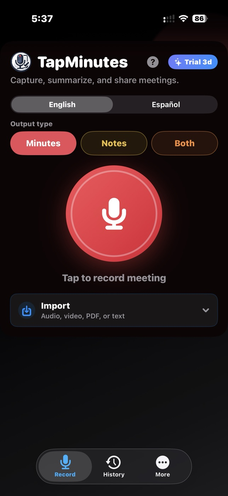
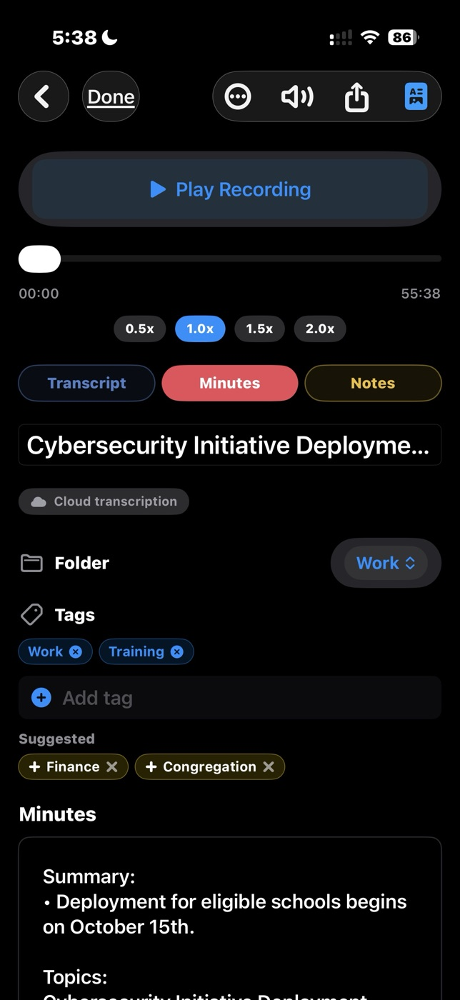
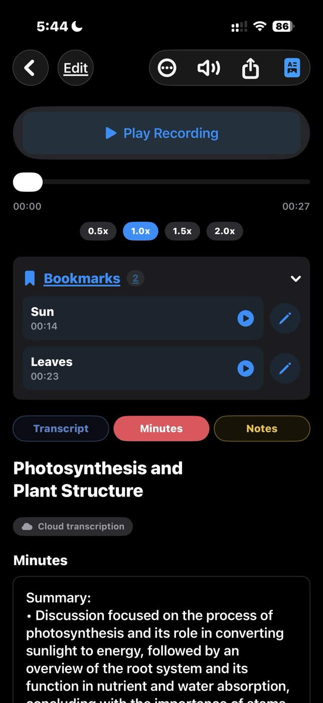
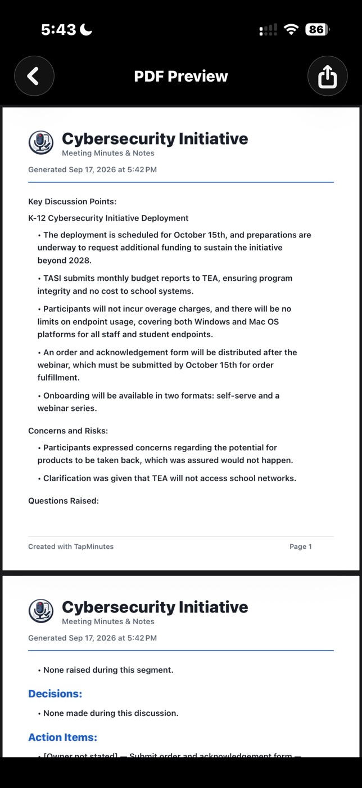
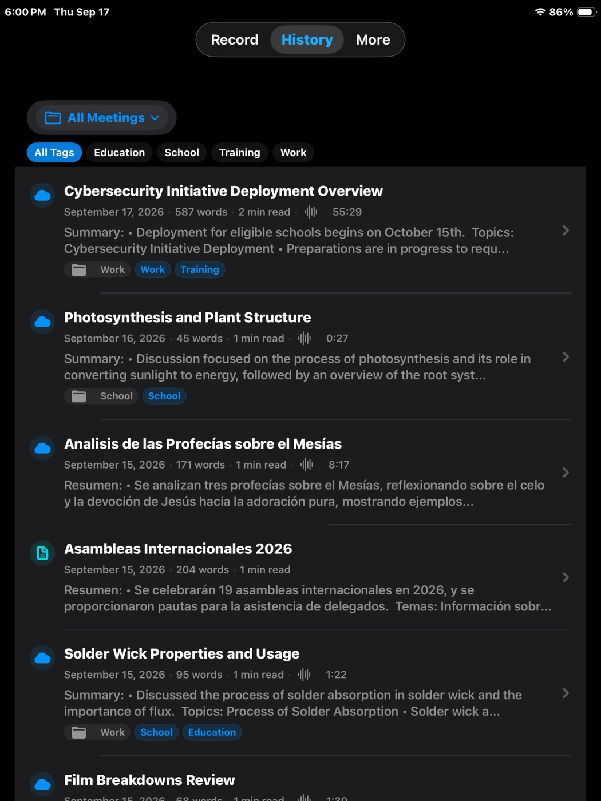

Record or import
Record on iPhone or iPad, or choose supported audio or video through the document picker.
Record a conversation or import supported media. TapMinutes creates a transcript, structured minutes, and detailed notes you can review and organize.
Apple Watch companion: start, pause, resume, stop, or cancel an iPhone recording from your wrist.


TapMinutes keeps the original transcript and lets you choose the output that fits the moment. The transcription route and available actions depend on your plan and device support.
Record on iPhone or iPad, or choose supported audio or video through the document picker.
Create structured Minutes, detailed Notes, or Both in English or Spanish.
Preview meaningful captions found inside media, reuse them, or request transcription instead.
Replay audio, review the transcript, search meetings, and use Pro organization tools.
Copy, share, read aloud, or create polished PDFs when Pro export features are available.
Every feature below is labeled so you can see what works on Basic, what requires Pro, and where a separate one-time purchase may apply.
Import supported media. Basic uses on-device transcription on supported iOS versions; Pro adds premium cloud transcription.
TapMinutes can inspect media for meaningful caption tracks and let you preview and reuse the text or transcribe the audio.
Generate structured minutes, detailed notes, or both while preserving the original transcript.
Select English or Spanish before recording or processing supported imported content.
Pause and resume, keep recording while iPhone is locked, and check recording status through a Live Activity.
Use the Watch app as a remote to control an active iPhone recording. Transcription and review remain on iPhone or iPad.
Store and replay meeting audio, keep the transcript, and review generated minutes and notes inside TapMinutes.
Create folders, edit tags, and add timestamped bookmarks. Existing organization remains visible on Basic when relevant.
Create unlimited custom output styles with Pro. A separate Custom Preset Pack can unlock up to three presets when shown in the app.
Basic includes two regenerations per meeting. Pro includes unlimited regeneration.
Have TapMinutes read generated minutes or notes aloud.
Create and share polished PDFs with Pro. Company name and logo branding is included with Pro or available separately when shown in the app.
Back up or restore meeting archives and use Recover Saved Recordings for unfinished audio.
When enabled, meeting data can sync across supported Apple devices through your personal iCloud account.
TapMinutes keeps audio, transcript, minutes, and notes together so you can return to the source instead of relying on a summary alone.
Switch between transcript, structured minutes, and detailed notes while replaying the original recording.

Pro can create and share PDFs. Custom branding can add a company name and logo when available through Pro or the separate purchase shown in the app.

Review, search, and filter your meeting history on a larger screen.

A seven-day Pro trial may be offered in the app. Current subscription options and availability are shown in TapMinutes; prices are not hard-coded here.
| Feature | Basic | Pro |
|---|---|---|
| Meeting allowance | Up to 3 processed meetings per day and 6 per week, shared across recordings and audio/video imports | Meetings beyond Basic daily and weekly count limits |
| Meeting length | Up to 20 minutes per recording or audio/video import | Longer recordings and imports beyond the Basic limit, subject to service and device constraints |
| Transcription | On-device transcription on supported iOS versions | Premium cloud transcription |
| Minutes and notes | Included for in-app review | Included |
| Regeneration | Two regenerations per meeting | Unlimited regeneration |
| Presets | Built-in styles; up to three custom presets with the separate Preset Pack when shown in the app | Built-in styles and unlimited custom presets |
| Copy, share, export, read aloud | Not included | Included |
| PDF export | Not included | Create and share PDFs |
| Folders, tags, bookmarks | Existing items remain visible when relevant; creating or editing requires Pro | Create and edit |
| Backup, restore, saved-recording recovery | Not included | Included |
| Document and transcript import | Not included | Text-based PDF, TXT, SRT, and VTT |
| iCloud sync | Included | Included |
One-time options: Custom Preset Pack can unlock up to three custom presets without Pro. Custom PDF Branding can unlock a company name and logo without an active Pro subscription, but PDF creation and sharing normally require Pro. These purchases are available only when shown in the app; availability can vary by storefront or release state.
TapMinutes supports two different import paths. Audio/video import is available on Basic and Pro; document and transcript import requires Pro.
Choose supported media through the iOS document picker. TapMinutes can inspect media for meaningful embedded captions and let you preview and reuse them or request a fresh transcription.
Import text-based PDF, TXT, SRT, and VTT files. SRT and VTT preserve existing transcript text for processing.
TapMinutes uses on-device and cloud processing for different jobs. The route depends on your plan, feature choice, and supported system capabilities.
Recordings and meeting information are stored on your device. Basic on-device transcription keeps audio processing on the device when supported.
When iCloud is enabled, meeting information may sync through your personal iCloud account. TapMinutes does not have direct access to content stored there.
Premium cloud transcription sends necessary audio for processing. AI generation may send transcript text and selected style instructions after the required disclosure and consent.
Cloud requests go through the TapMinutes Cloudflare proxy and use OpenAI's API. The API key is not embedded in the app. Under OpenAI's API data policy, API content is not used to train OpenAI models. Read the full Privacy Policy.
For step-by-step instructions and troubleshooting, visit the Help Center.
Find detailed instructions or contact support directly.